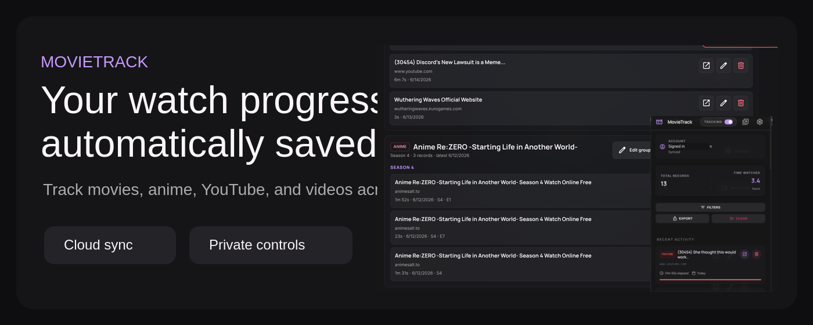

Repository Description
Chrome extension that tracks movie, anime, and YouTube watch progress across sites with local-first storage and optional Supabase sync.GitHub Topics
chrome-extension
manifest-v3
typescript
supabase
watch-progress
movie-tracker
anime-tracker
youtube
privacy
local-first
browser-extension
google-auth
rls
open-sourceChrome Web Store Copy
Short description
Automatically track movies, anime, YouTube videos, and watch progress across devices.
Full description
MovieTrack is a privacy-conscious watch progress tracker for videos, anime, movies, and YouTube. It works locally by default, and you can optionally sign in with Google to sync your progress through your Supabase account.
Current release
GitHub Release: v0.1.4. Chrome Web Store item ID: jkagnflabbhgejkamhdkeeeeigfhjhje.
Open Graph Image
